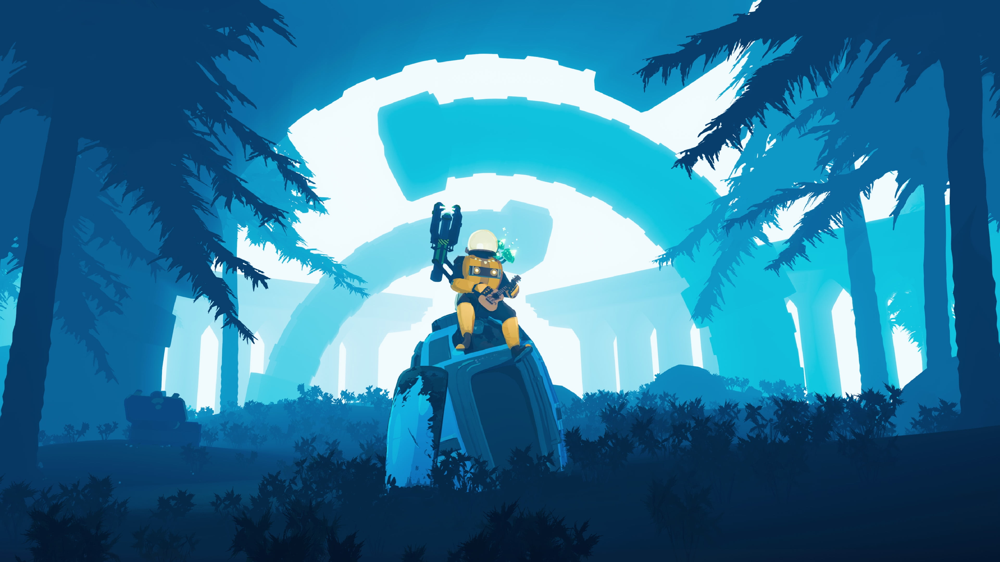

• Sobreviva em um planeta alienígena
Mais de 12 locais feitos à mão, todos lotados de monstros desafiadores e chefes enormes que
se
opõem
à
sua existência. Lute até o chefe final e escape ou continue seu jogo infinitamente e veja o
quanto
você
é capaz de sobreviver. Um sistema de escalonamento único faz com que você e seus inimigos
ganhem
poder
ilimitado ao longo do jogo.


• Descubra novos itens poderosos
Mais de 110 itens mantêm cada partida atualizada e cheia de novos desafios. Quanto mais
itens
você
coletar, maiores e mais surpreendentes as combinações dos efeitos podem ser. Quanto mais
itens
você
encontrar, mais folclore (e estratégias) você descobrirá por meio dos registros.
• Libere novos jeitos de jogar
Libere uma tripulação de sobreviventes jogáveis, cada um com estilo de combate único e
diferentes
habilidades para dominar. Conheça os mistérios dos Artefatos e ative modificações de
jogabilidade
como
fogo amigo, surgimento de sobreviventes aleatórios, seleção de itens e mais. Com fases,
inimigos
e
itens
aleatórios, nenhuma partida será igual a outra.


• Jogue Individual ou cooperativamente
Aventure-se por conta própria ou com até três amigos no modo cooperativo online ou dispute o
desafio
rotativo das Provações Prismáticas. Sobreviventes novinhos em folha, como o Capitão e o
MUL-T,
juntam-se
aos clássicos, como o Engenheiro, a Caçadora e, claro, o Comando.